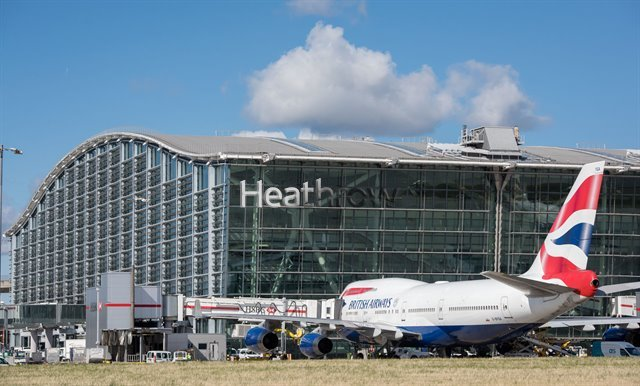

Aeropuerto de Heathrow
Heathrow es el aeropuerto más importante del Reino Unido y uno de los principales hubs aéreos de Europa. En 2019 registró su noveno año de crecimiento consecutivo. Por sus terminales transitaron 80,9 millones de pasajeros, llevando a Heathrow a ocupar la primera posición en Europa y la séptima del mundo en términos de tráfico y número de pasajeros.